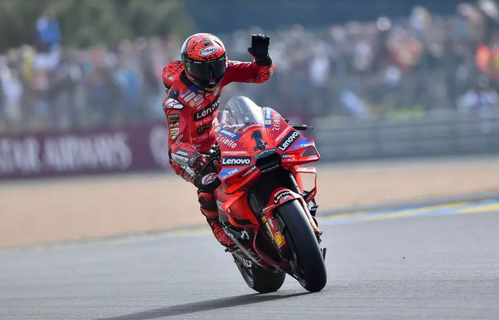
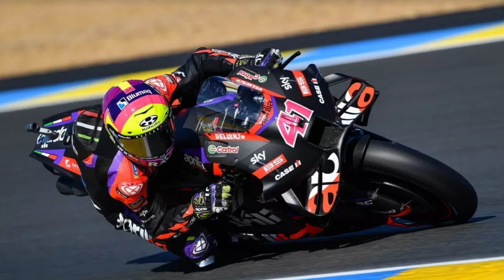

El más importante en juego es el derecho a ser compañero de Bagnaia en el equipo oficial Ducati a partir de 2025. El actual titular, Enea Bastianini, renueva su rivalidad con Jorge Martín (Prima Pramac Racing) por los honores de fábrica.
El ocho veces Campeón del Mundo, Marc Márquez, también está en la mezcla, con el '93' en un acuerdo de un solo año con Gresini Racing
Publicado el Miércoles, 12 de mayo de 2024
Uno de los interrogantes que persisten en la fábrica de Noale es si Aleix Espargaró optará por colgar el mono al final de la temporada o no.
En el otro lado del box, Maverick Viñales quiere asegurarse un contrato para 2025, y actuaciones como la del GP de las Américas deberían reforzar su causa.
Publicado el Jueves, 13 de mayo de 2024
